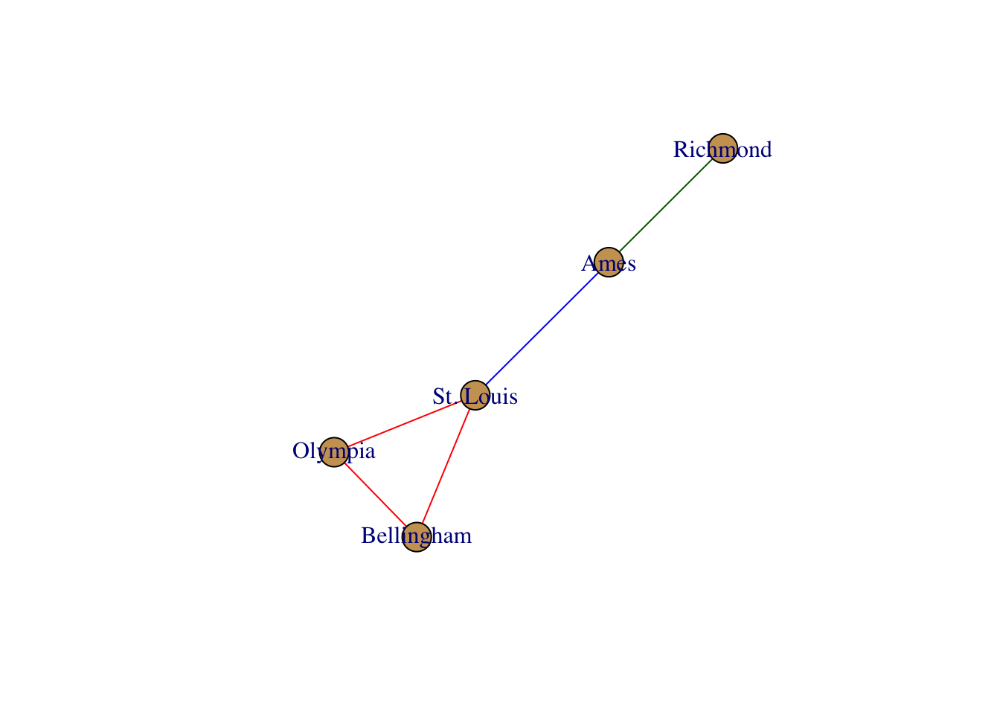
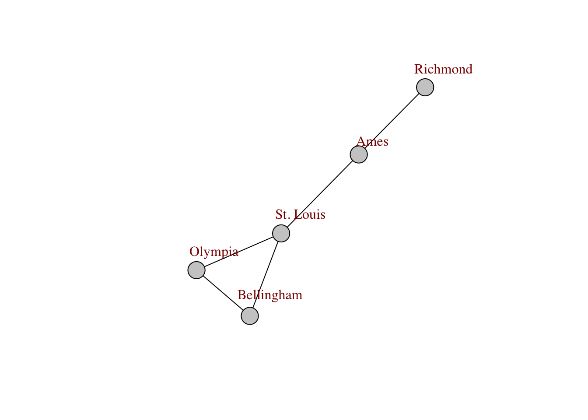
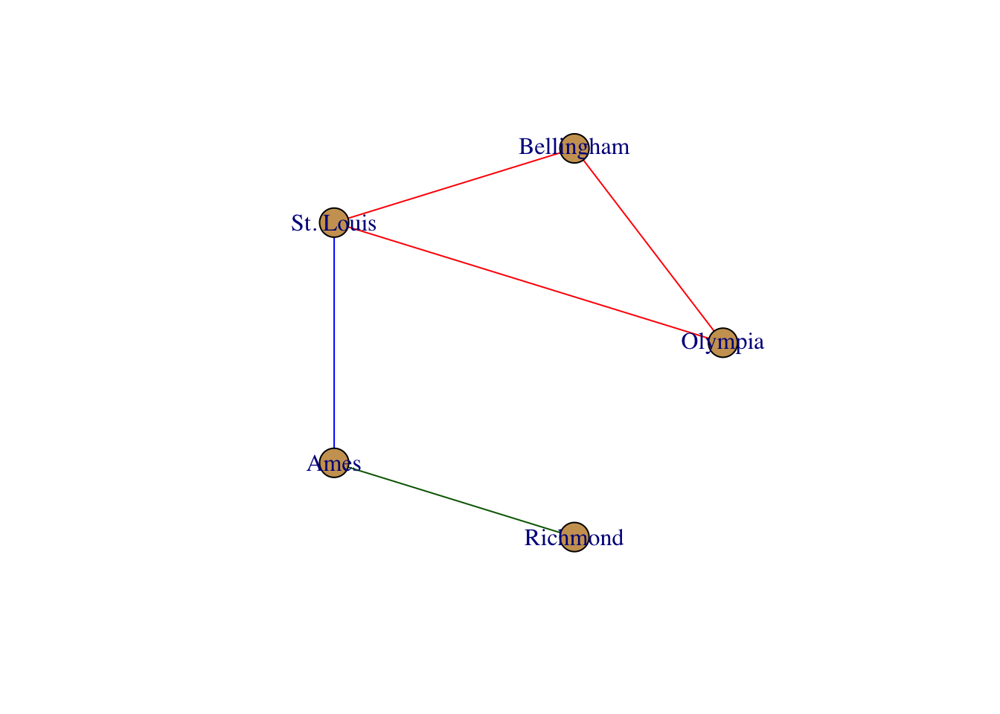
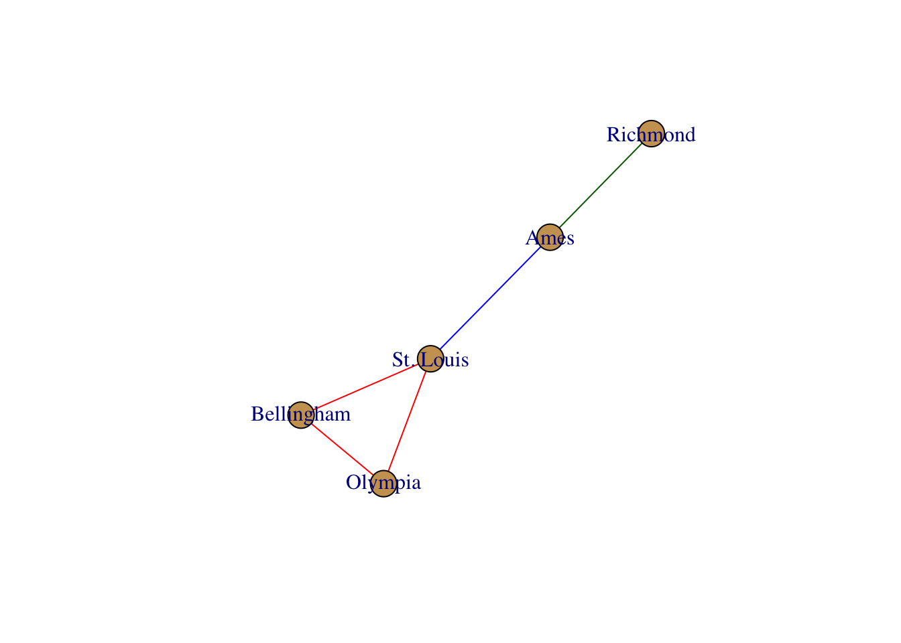
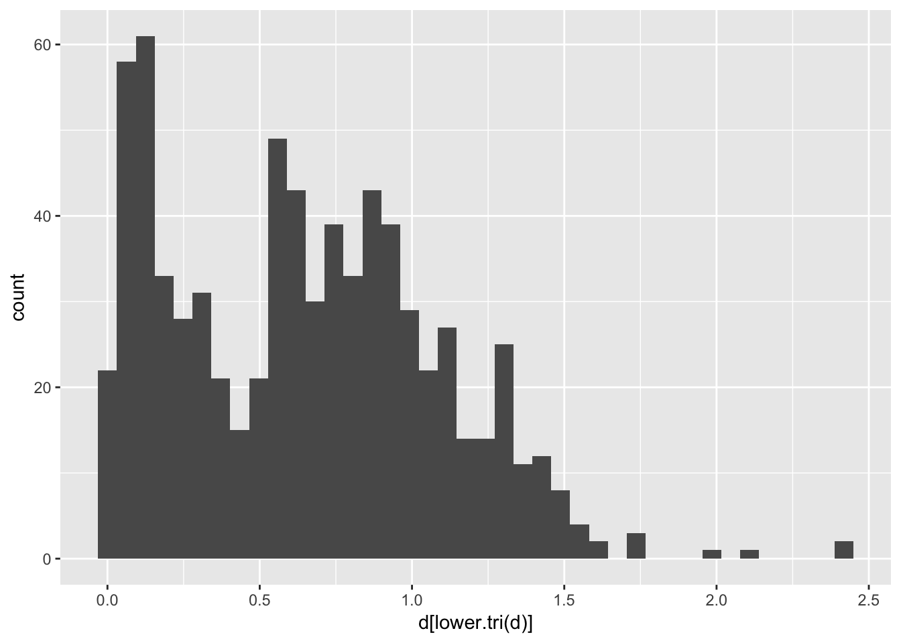

27 Distance Networks

27.1 Graph Structure
A <- matrix(0, nrow=5, ncol=5)
A[1,2] <- A[2,3] <- A[1,3] <- A[3,4] <- A[4,5] <- 1
A <- A + t(A)
A## [,1] [,2] [,3] [,4] [,5]
## [1,] 0 1 1 0 0
## [2,] 1 0 1 0 0
## [3,] 1 1 0 1 0
## [4,] 0 0 1 0 1
## [5,] 0 0 0 1 0There is a quick function, as.popgraph() that takes either an existing igraphobject or a matrix and turns them into popgraph objects.
library(igraph)
g <- graph_from_adjacency_matrix( A , mode="undirected")There are several options available under the mode parameter. We typically use the undirected graph option but the following are also available:
undirectedThe connections between nodes are symmetric. This is the default for population graphs as covariance, the quantity the edge is representing is symmetrical.directedThe edges are asymetric.maxorminWill take the largest (or smallest) value of the matrix (e.g., \(max(A[i,j], A[j,i])\) or \(min( A[i,j], A[j,i])\) ).upperorlowerUses either the upper or lower element of the matrix.plusAdds upper and lower values (e.g., \(A[i,j] + A[j,i]\)).
The graph object presents several characteristics as an output including the number of nodes and edges, the mode of the graph, and a list of the edges (if there aren’t too many–in which case the list is truncated).
g## IGRAPH U--- 5 5 --
## + edges:
## [1] 1--2 1--3 2--3 3--4 4--5Here we see that this object is an igraph, is ’U’ndirected, and has 5 nodes and 5 edges. The edges are indicated by numbers and are graphically displayed.
27.1.1 Node & Edge Attributes
The underlying structure of an igraph object allows you to assoicate attributes (e.g., other data) with nodes and edges. Node attributes are accessed using the \(V(graph)\) operator (for vertex) and edge attributes are done via \(E(graph)\). Attributes can be set as well as retrieved using the same mechanisms for nodes.
V(g)$name <- c("Olympia","Bellingham","St. Louis","Ames","Richmond")
V(g)$group <- c("West","West", "Central","Central","East")
V(g)$color <- "#cca160"
list.vertex.attributes( g )## [1] "name" "group" "color"V(g)$name## [1] "Olympia" "Bellingham" "St. Louis" "Ames" "Richmond"and for edges
E(g)## + 5/5 edges (vertex names):
## [1] Olympia --Bellingham Olympia --St. Louis Bellingham--St. Louis
## [4] St. Louis --Ames Ames --RichmondE(g)$color <- c("red","red", "red", "blue","dark green")
list.edge.attributes( g )## [1] "color"27.2 Plotting a Graphs
One of the main benefits to using R is that you can leverage the mutlitude of other packages to visualize and manipulate your data in interesting and informative ways. Since a popgraph is an instance of an igraph element, we can use the igraph routines for plotting. Here is an example.
plot(g)
There are several different options you can use to manipulate the graphical forms. By default, the plotting routines look for node and edge attributes such as name and color to plot the output appropriately. There are several additional plotting functions for plotting igraph objects. Here are some examples.
plot(g, edge.color="black", vertex.label.color="darkred", vertex.color="#cccccc", vertex.label.dist=1)
Below is the output from the igraph.plotting help file that covers the main options that you have for customizing the way that the network is displayed.
Drawing graphs {igraph} R Documentation
Drawing graphs
Description
The common bits of the three plotting functions plot.igraph, tkplot and rglplot are discussed in this manual page
Details
There are currently three different functions in the igraph package which can draw graph in various ways:
plot.igraph does simple non-interactive 2D plotting to R devices. Actually it is an implementation of the plot generic function, so you can write plot(graph) instead of plot.igraph(graph). As it used the standard R devices it supports every output format for which R has an output device. The list is quite impressing: PostScript, PDF files, XFig files, SVG files, JPG, PNG and of course you can plot to the screen as well using the default devices, or the good-looking anti-aliased Cairo device. See plot.igraph for some more information.
tkplot does interactive 2D plotting using the tcltk package. It can only handle graphs of moderate size, a thousend vertices is probably already too many. Some parameters of the plotted graph can be changed interactively after issuing the tkplot command: the position, color and size of the vertices and the color and width of the edges. See tkplot for details.
rglplot is an experimental function to draw graphs in 3D using OpenGL. See rglplot for some more information.
Please also check the examples below.
How to specify graphical parameters
There are three ways to give values to the parameters described below, in section 'Parameters'. We give these three ways here in the order of their precedence.
The first method is to supply named arguments to the plotting commands: plot.igraph, tkplot or rglplot. Parameters for vertices start with prefix ‘vertex.', parameters for edges have prefix ‘edge.', and global parameters have no prefix. Eg. the color of the vertices can be given via argument vertex.color, whereas edge.color sets the color of the edges. layout gives the layout of the graphs.
The second way is to assign vertex, edge and graph attributes to the graph. These attributes have no prefix, ie. the color of the vertices is taken from the color vertex attribute and the color of the edges from the color edge attribute. The layout of the graph is given by the layout graph attribute. (Always assuming that the corresponding command argument is not present.) Setting vertex and edge attributes are handy if you want to assign a given ‘look' to a graph, attributes are saved with the graph is you save it with save or in GraphML format with write_graph, so the graph will have the same look after loading it again.
If a parameter is not given in the command line, and the corresponding vertex/edge/graph attribute is also missing then the general igraph parameters handled by igraph_options are also checked. Vertex parameters have prefix ‘vertex.', edge parameters are prefixed with ‘edge.', general parameters like layout are prefixed with ‘plot'. These parameters are useful if you want all or most of your graphs to have the same look, vertex size, vertex color, etc. Then you don't need to set these at every plotting, and you also don't need to assign vertex/edge attributes to every graph.
If the value of a parameter is not specified by any of the three ways described here, its default valued is used, as given in the source code.
Different parameters can have different type, eg. vertex colors can be given as a character vector with color names, or as an integer vector with the color numbers from the current palette. Different types are valid for different parameters, this is discussed in detail in the next section. It is however always true that the parameter can always be a function object in which it will be called with the graph as its single argument to get the “proper" value of the parameter. (If the function returns another function object that will not be called again...)
The list of parameters
Vertex parameters first, note that the ‘vertex.' prefix needs to be added if they are used as an argument or when setting via igraph_options. The value of the parameter may be scalar valid for every vertex or a vector with a separate value for each vertex. (Shorter vectors are recycled.)
size
The size of the vertex, a numeric scalar or vector, in the latter case each vertex sizes may differ. This vertex sizes are scaled in order have about the same size of vertices for a given value for all three plotting commands. It does not need to be an integer number.
The default value is 15. This is big enough to place short labels on vertices.
size2
The “other" size of the vertex, for some vertex shapes. For the various rectangle shapes this gives the height of the vertices, whereas size gives the width. It is ignored by shapes for which the size can be specified with a single number.
The default is 15.
color
The fill color of the vertex. If it is numeric then the current palette is used, see palette. If it is a character vector then it may either contain integer values, named colors or RGB specified colors with three or four bytes. All strings starting with ‘#' are assumed to be RGB color specifications. It is possible to mix named color and RGB colors. Note that tkplot ignores the fourth byte (alpha channel) in the RGB color specification.
For plot.igraph and integer values, the default igraph palette is used (see the ‘palette' parameter below. Note that this is different from the R palette.
If you don't want (some) vertices to have any color, supply NA as the color name.
The default value is “SkyBlue2".
frame.color
The color of the frame of the vertices, the same formats are allowed as for the fill color.
If you don't want vertices to have a frame, supply NA as the color name.
By default it is “black".
shape
The shape of the vertex, currently “circle", “square", “csquare", “rectangle", “crectangle", “vrectangle", “pie" (see vertex.shape.pie), ‘sphere', and “none" are supported, and only by the plot.igraph command. “none" does not draw the vertices at all, although vertex label are plotted (if given). See shapes for details about vertex shapes and vertex.shape.pie for using pie charts as vertices.
The “sphere" vertex shape plots vertices as 3D ray-traced spheres, in the given color and size. This produces a raster image and it is only supported with some graphics devices. On some devices raster transparency is not supported and the spheres do not have a transparent background. See dev.capabilities and the ‘rasterImage' capability to check that your device is supported.
By default vertices are drawn as circles.
label
The vertex labels. They will be converted to character. Specify NA to omit vertex labels.
The default vertex labels are the vertex ids.
label.family
The font family to be used for vertex labels. As different plotting commands can used different fonts, they interpret this parameter different ways. The basic notation is, however, understood by both plot.igraph and tkplot. rglplot does not support fonts at all right now, it ignores this parameter completely.
For plot.igraph this parameter is simply passed to text as argument family.
For tkplot some conversion is performed. If this parameter is the name of an exixting Tk font, then that font is used and the label.font and label.cex parameters are ignored complerely. If it is one of the base families (serif, sans, mono) then Times, Helvetica or Courier fonts are used, there are guaranteed to exist on all systems. For the ‘symbol' base family we used the symbol font is available, otherwise the first font which has ‘symbol' in its name. If the parameter is not a name of the base families and it is also not a named Tk font then we pass it to tkfont.create and hope the user knows what she is doing. The label.font and label.cex parameters are also passed to tkfont.create in this case.
The default value is ‘serif'.
label.font
The font within the font family to use for the vertex labels. It is interpreted the same way as the the font graphical parameter: 1 is plain text, 2 is bold face, 3 is italic, 4 is bold and italic and 5 specifies the symbol font.
For plot.igraph this parameter is simply passed to text.
For tkplot, if the label.family parameter is not the name of a Tk font then this parameter is used to set whether the newly created font should be italic and/or boldface. Otherwise it is ignored.
For rglplot it is ignored.
The default value is 1.
label.cex
The font size for vertex labels. It is interpreted as a multiplication factor of some device-dependent base font size.
For plot.igraph it is simply passed to text as argument cex.
For tkplot it is multiplied by 12 and then used as the size argument for tkfont.create. The base font is thus 12 for tkplot.
For rglplot it is ignored.
The default value is 1.
label.dist
The distance of the label from the center of the vertex. If it is 0 then the label is centered on the vertex. If it is 1 then the label is displayed beside the vertex.
The default value is 0.
label.degree
It defines the position of the vertex labels, relative to the center of the vertices. It is interpreted as an angle in radian, zero means ‘to the right', and ‘pi' means to the left, up is -pi/2 and down is pi/2.
The default value is -pi/4.
label.color
The color of the labels, see the color vertex parameter discussed earlier for the possible values.
The default value is black.
Edge parameters require to add the ‘edge.' prefix when used as arguments or set by igraph_options. The edge parameters:
color
The color of the edges, see the color vertex parameter for the possible values.
By default this parameter is darkgrey.
width
The width of the edges.
The default value is 1.
arrow.size
The size of the arrows. Currently this is a constant, so it is the same for every edge. If a vector is submitted then only the first element is used, ie. if this is taken from an edge attribute then only the attribute of the first edge is used for all arrows. This will likely change in the future.
The default value is 1.
arrow.width
The width of the arrows. Currently this is a constant, so it is the same for every edge. If a vector is submitted then only the first element is used, ie. if this is taken from an edge attribute then only the attribute of the first edge is used for all arrows. This will likely change in the future.
This argument is currently only used by plot.igraph.
The default value is 1, which gives the same width as before this option appeared in igraph.
lty
The line type for the edges. Almost the same format is accepted as for the standard graphics par, 0 and “blank" mean no edges, 1 and “solid" are for solid lines, the other possible values are: 2 (“dashed"), 3 (“dotted"), 4 (“dotdash"), 5 (“longdash"), 6 (“twodash").
tkplot also accepts standard Tk line type strings, it does not however support “blank" lines, instead of type ‘0' type ‘1', ie. solid lines will be drawn.
This argument is ignored for rglplot.
The default value is type 1, a solid line.
label
The edge labels. They will be converted to character. Specify NA to omit edge labels.
Edge labels are omitted by default.
label.family
Font family of the edge labels. See the vertex parameter with the same name for the details.
label.font
The font for the edge labels. See the corresponding vertex parameter discussed earlier for details.
label.cex
The font size for the edge labels, see the corresponding vertex parameter for details.
label.color
The color of the edge labels, see the color vertex parameters on how to specify colors.
label.x
The horizontal coordinates of the edge labels might be given here, explicitly. The NA elements will be replaced by automatically calculated coordinates. If NULL, then all edge horizontal coordinates are calculated automatically. This parameter is only supported by plot.igraph.
label.y
The same as label.x, but for vertical coordinates.
curved
Specifies whether to draw curved edges, or not. This can be a logical or a numeric vector or scalar.
First the vector is replicated to have the same length as the number of edges in the graph. Then it is interpreted for each edge separately. A numeric value specifies the curvature of the edge; zero curvature means straight edges, negative values means the edge bends clockwise, positive values the opposite. TRUE means curvature 0.5, FALSE means curvature zero.
By default the vector specifying the curvatire is calculated via a call to the curve_multiple function. This function makes sure that multiple edges are curved and are all visible. This parameter is ignored for loop edges.
The default value is FALSE.
This parameter is currently ignored by rglplot.
arrow.mode
This parameter can be used to specify for which edges should arrows be drawn. If this parameter is given by the user (in either of the three ways) then it specifies which edges will have forward, backward arrows, or both, or no arrows at all. As usual, this parameter can be a vector or a scalar value. It can be an integer or character type. If it is integer then 0 means no arrows, 1 means backward arrows, 2 is for forward arrows and 3 for both. If it is a character vector then “<" and “<-" specify backward, “>" and “->" forward arrows and “<>" and “<->" stands for both arrows. All other values mean no arrows, perhaps you should use “-" or “–" to specify no arrows.
Hint: this parameter can be used as a ‘cheap' solution for drawing “mixed" graphs: graphs in which some edges are directed some are not. If you want do this, then please create a directed graph, because as of version 0.4 the vertex pairs in the edge lists can be swapped in undirected graphs.
By default, no arrows will be drawn for undirected graphs, and for directed graphs, an arrow will be drawn for each edge, according to its direction. This is not very surprising, it is the expected behavior.
loop.angle
Gives the angle in radian for plotting loop edges. See the label.dist vertex parameter to see how this is interpreted.
The default value is 0.
loop.angle2
Gives the second angle in radian for plotting loop edges. This is only used in 3D, loop.angle is enough in 2D.
The default value is 0.
Other parameters:
layout
Either a function or a numeric matrix. It specifies how the vertices will be placed on the plot.
If it is a numeric matrix, then the matrix has to have one line for each vertex, specifying its coordinates. The matrix should have at least two columns, for the x and y coordinates, and it can also have third column, this will be the z coordinate for 3D plots and it is ignored for 2D plots.
If a two column matrix is given for the 3D plotting function rglplot then the third column is assumed to be 1 for each vertex.
If layout is a function, this function will be called with the graph as the single parameter to determine the actual coordinates. The function should return a matrix with two or three columns. For the 2D plots the third column is ignored.
The default value is layout_nicely, a smart function that chooses a layouter based on the graph.
margin
The amount of empty space below, over, at the left and right of the plot, it is a numeric vector of length four. Usually values between 0 and 0.5 are meaningful, but negative values are also possible, that will make the plot zoom in to a part of the graph. If it is shorter than four then it is recycled.
rglplot does not support this parameter, as it can zoom in and out the graph in a more flexible way.
Its default value is 0.
palette
The color palette to use for vertex color. The default is categorical_pal, which is a color-blind friendly categorical palette. See its manual page for details and other palettes. This parameters is only supported by plot, and not by tkplot and rglplot.
rescale
Logical constant, whether to rescale the coordinates to the [-1,1]x[-1,1](x[-1,1]) interval. This parameter is not implemented for tkplot.
Defaults to TRUE, the layout will be rescaled.
asp
A numeric constant, it gives the asp parameter for plot, the aspect ratio. Supply 0 here if you don't want to give an aspect ratio. It is ignored by tkplot and rglplot.
Defaults to 1.
frame
Boolean, whether to plot a frame around the graph. It is ignored by tkplot and rglplot.
Defaults to FALSE.
main
Overall title for the main plot. The default is empty if the annotate.plot igraph option is FALSE, and the graph's name attribute otherwise. See the same argument of the base plot function. Only supported by plot.
sub
Subtitle of the main plot, the default is empty. Only supported by plot.
xlab
Title for the x axis, the default is empty if the annotate.plot igraph option is FALSE, and the number of vertices and edges, if it is TRUE. Only supported by plot.
ylab
Title for the y axis, the default is empty. Only supported by plot.
Author(s)
Gabor Csardi csardi.gabor@gmail.com
See Also
plot.igraph, tkplot, rglplot, igraph_options
Examples
## Not run:
# plotting a simple ring graph, all default parameters, except the layout
g <- make_ring(10)
g$layout <- layout_in_circle
plot(g)
tkplot(g)
rglplot(g)
# plotting a random graph, set the parameters in the command arguments
g <- barabasi.game(100)
plot(g, layout=layout_with_fr, vertex.size=4,
vertex.label.dist=0.5, vertex.color="red", edge.arrow.size=0.5)
# plot a random graph, different color for each component
g <- sample_gnp(100, 1/100)
comps <- components(g)$membership
colbar <- rainbow(max(comps)+1)
V(g)$color <- colbar[comps+1]
plot(g, layout=layout_with_fr, vertex.size=5, vertex.label=NA)
# plot communities in a graph
g <- make_full_graph(5) %du% make_full_graph(5) %du% make_full_graph(5)
g <- add_edges(g, c(1,6, 1,11, 6,11))
com <- cluster_spinglass(g, spins=5)
V(g)$color <- com$membership+1
g <- set_graph_attr(g, "layout", layout_with_kk(g))
plot(g, vertex.label.dist=1.5)
# draw a bunch of trees, fix layout
igraph_options(plot.layout=layout_as_tree)
plot(make_tree(20, 2))
plot(make_tree(50, 3), vertex.size=3, vertex.label=NA)
tkplot(make_tree(50, 2, mode="undirected"), vertex.size=10,
vertex.color="green")
## End(Not run)
In addition to the physical appearance of nodes, edges, and labels, networks are must also have a ‘layout’ that describes the relative position of nodes on the plot surface. There are several ways you can define a layout, here are some examples.
layout <- layout.circle( g )
plot( g, layout=layout)
layout <- layout.fruchterman.reingold( g )
plot( g, layout=layout)
In addition to normal plotting, you can also integrate interactive plotting. Here is an example using the networkD3 library. It is interactive, so grab one of the nodes and move it around.
library(networkD3)
edgelist <- as_edgelist(g)
df <- data.frame( src=edgelist[,1], target=edgelist[,2])
simpleNetwork(df,fontSize = 14,opacity = 0.95)27.3 Mapping Networks
For quick maps I typically use the maps library. It is pretty straightforward to use and does not take too much thought to quickly plot something or find the approporiate raster files. Below, I add some coordinates to the data set.
V(g)$Latitude <- c( 47.15, 48.75,38.81, 42.26, 37.74 )
V(g)$Longitude <- c(-122.89,-122.49,-89.98, -93.47, -77.16 )Then overlay this onto a map using the overlay_popgraph() function. Here is an example where I plot it over the map of the US states.
library(maps)
library(popgraph)
pg <- as.popgraph( g )
map( "state" )
overlay_popgraph( pg )Figure 27.1: Map of graph stetched onto continential US map.
This function requires that you already have a plot available (it uses the lines() and points() routines). If you try to just overlay this with no existing plot, it will not work (and should throw an error).
27.4 Genetic Distance Graphs
Several graph-theoretic approaches have been suggested in the literature, some of which are based upon statistical models (e.g., popgraphs in the next chapter) and some of which are less structured.
A common approach has been to use a measure of pair-wise genetic distance, measured between individuals or strata. In the following example, Nei’s genetic distance (see Chapter ??) is used.
library(gstudio)
data(arapat)
d <- genetic_distance(arapat,mode="Nei")yielding a \(KxK\) distance matrix. Nei’s distance produces values that are non-negative
d[1:6,1:6]## 101 102 12 153 156 157
## 101 0.0000000 0.226820 0.8385165 0.9177730 1.19671667 1.09526743
## 102 0.2268200 0.000000 1.2589813 1.1874872 1.29512009 1.25632140
## 12 0.8385165 1.258981 0.0000000 0.1340892 1.22979312 0.90185134
## 153 0.9177730 1.187487 0.1340892 0.0000000 1.14458359 0.86975864
## 156 1.1967167 1.295120 1.2297931 1.1445836 0.00000000 0.03459425
## 157 1.0952674 1.256321 0.9018513 0.8697586 0.03459425 0.00000000and in the case of the arapat data, produces a bivariate distribution of distances.
library(ggplot2)
qplot(d[lower.tri(d)],geom = "histogram", bins=40)
Since Nei’s distance is